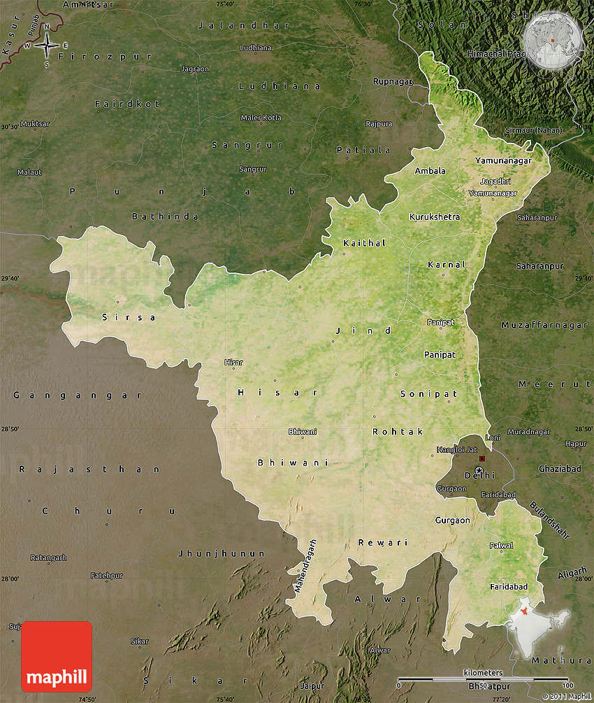
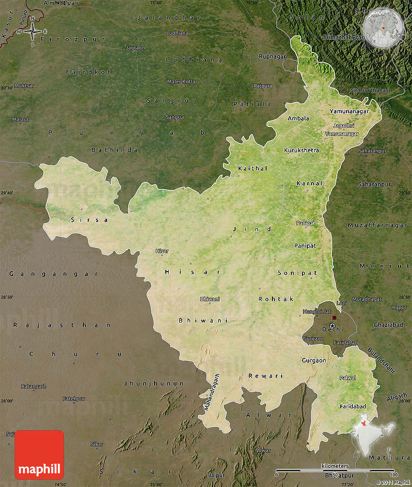

Haryana is a North Indian state surrounding New Delhi on 3 sides. The Yamuna River runs along its eastern border with Uttar Pradesh. Shared with Punjab, the state capital Chandigarh is known for its modernist buildings and gridlike street plan designed by Swiss architect, Le Corbusier. The Zakir Hussain Rose Garden features 1,600 species, while its Rock Garden showcases sculptures made with recycled materials.